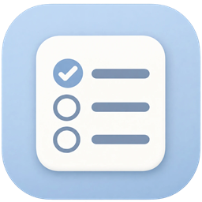
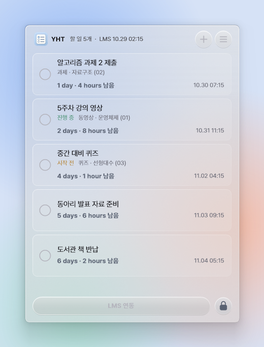
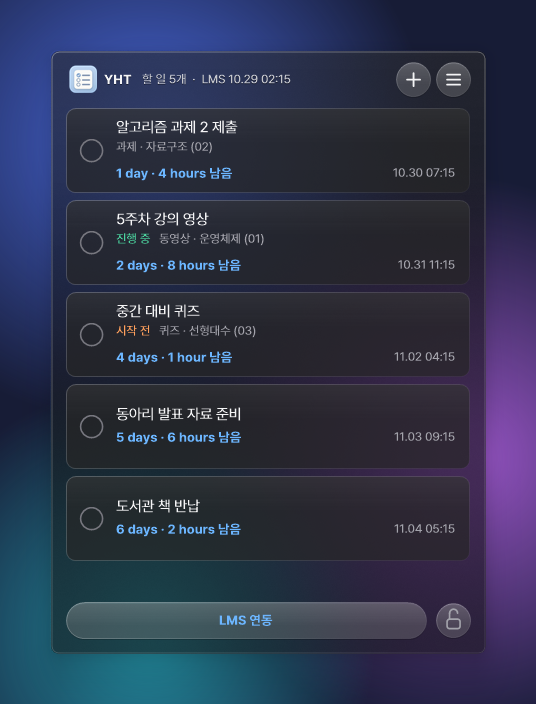
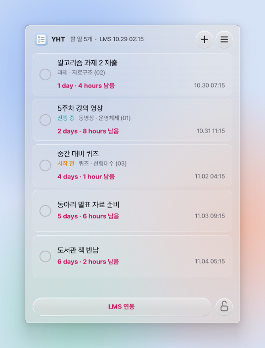
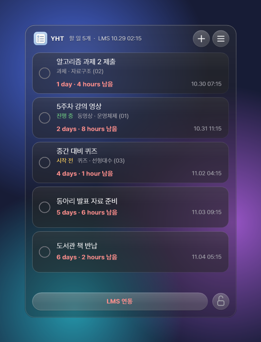
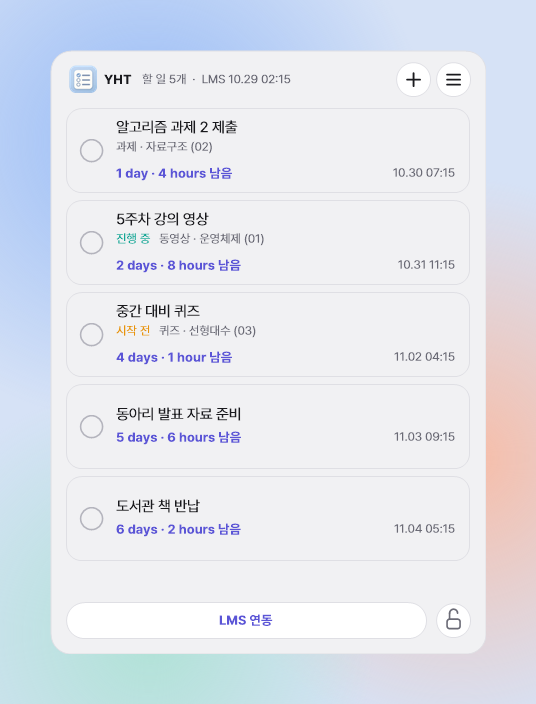
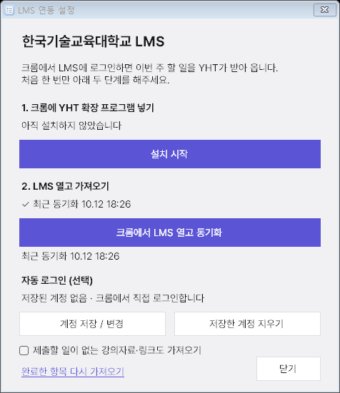

YHTYou Have Time매번 LMS에 들어가서 확인했다가 잊어버리지 마세요. 컴퓨터를 켤 때마다 할 일이 바탕화면에서 먼저 기다립니다.
YHT는 한국기술교육대학교 LMS의 과제·퀴즈·강의 영상 기한을 바탕화면에 띄워 두는 유리 위젯입니다.
크롬에서 LMS에 로그인하면 이번 주 할 일이 위젯으로 전달됩니다. 위젯의 LMS 연동 버튼을 누르면 바로 갱신하고, LMS 홈을 열어 둔 동안에는 15분마다 다시 확인합니다.
카드 가장자리에 은은한 빛이 돕니다. 표를 읽지 않아도 무엇부터 손댈 수 있는지 보입니다.

LMS는 들어가야 보이지만 바탕화면은 켜면 보입니다. YHT는 다른 창 위로 올라오지 않고 바탕화면에 머뭅니다. 평소에는 잠겨 있어서 실수로 눌리지 않고, 더블 클릭하거나 자물쇠를 누르면 열립니다.
뒤가 흐리게 비치는 리퀴드 글래스, 그대로 비치는 클리어 글래스, 불투명한 기본 스타일 중에서 고릅니다. 투명도는 0%부터 100%까지, 색상 테마는 여섯 가지입니다.




내려받은 ZIP에는 실행 파일 하나와 안내문만 들어 있습니다. LMS 연결에는 Google Chrome이 필요합니다.
압축을 풀고 실행합니다. “Windows의 PC 보호” 창이 뜨면 추가 정보 → 실행을 누르세요.
Windows를 켤 때 함께 시작할지 묻습니다. 예를 누르면 내려받은 파일은 지워도 됩니다.
설정 창의 설치 시작을 누르면 크롬 페이지와 폴더가 함께 열립니다. 개발자 모드를 켜고 폴더를 끌어다 놓습니다.
크롬에서 LMS 열고 동기화를 누르고 로그인하면 끝입니다. 다음부터는 위젯의 LMS 연동 버튼만 누릅니다.
